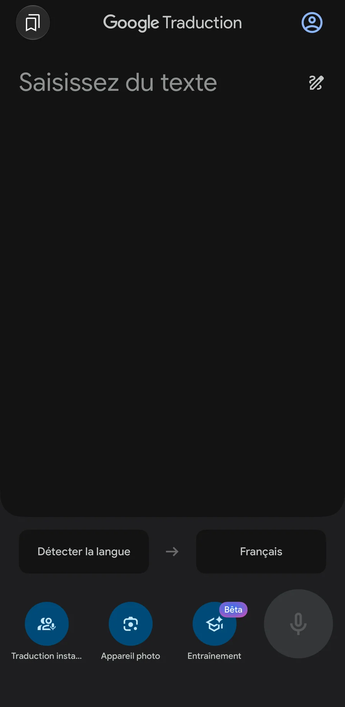
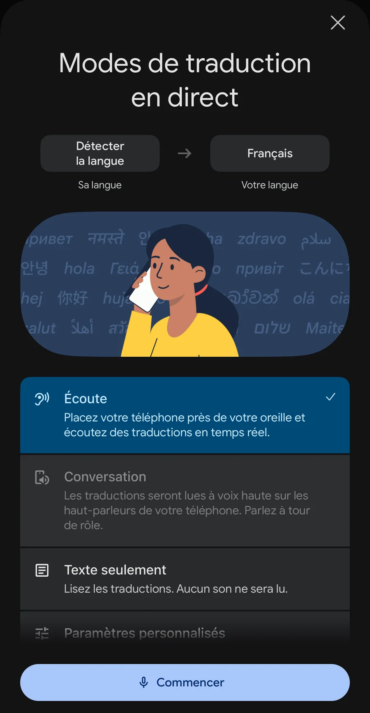
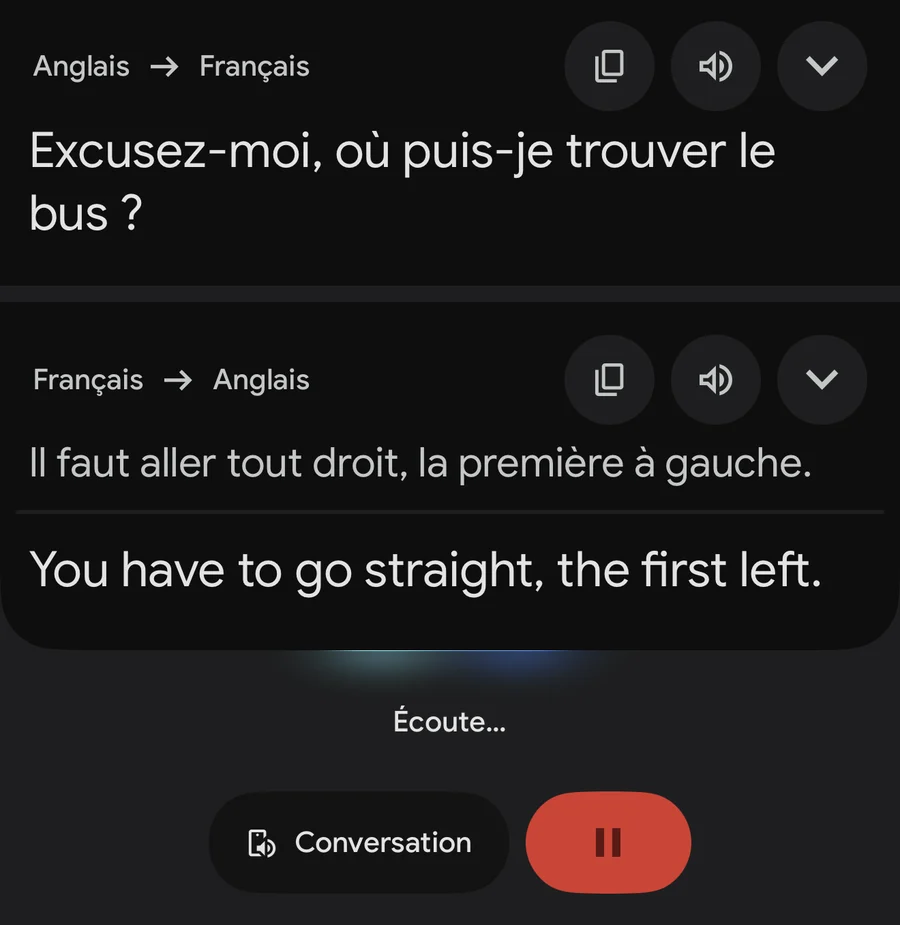

1
Ouvrir la traduction instantanée
Google Traduction › Traduction instantanée
Sur l'écran d'accueil, touche le premier bouton en bas à gauche : Traduction instantanée (icône de personne avec un micro).

Tu parles français, l'autre entend sa langue, et sa réponse arrive dans tes écouteurs. Google Traduction le fait gratuitement, sur Android et iPhone, dans plus de 70 langues.

La traduction en direct transforme ton téléphone en interprète : tu parles dans ta langue, l'IA traduit au fil de la conversation et fait entendre la traduction à l'autre personne, puis traduit sa réponse pour toi. Depuis juin 2026, Google Traduction utilise Gemini 3.5 Live Translate, qui traduit en continu sans attendre la fin de chaque phrase.
L'appli reconnaît qui parle et traduit chaque phrase dans l'autre langue : à l'écran, tu vois « Anglais → Français » puis « Français → Anglais ».
BidirectionnelDont le français, l'anglais, l'espagnol, l'allemand, le japonais, le chinois, l'arabe et l'hindi. La langue de l'autre peut être détectée automatiquement.
70+ languesFilaires, sans fil, de n'importe quelle marque. Sans écouteurs, le mode Écoute fait passer la traduction par l'écouteur du téléphone, collé à l'oreille comme pour un appel.
Sans matériel spécialGoogle Traduction est gratuit sur Android et iPhone, sans abonnement. Chez Apple, il faut des AirPods récents et un iPhone compatible Apple Intelligence.
GratuitDans l'appli Google Traduction (Android et iPhone). Captures prises sur iPhone le 24/11/2026, sans données personnelles.
Sur l'écran d'accueil, touche le premier bouton en bas à gauche : Traduction instantanée (icône de personne avec un micro).

En haut, Sa langue (ou « Détecter la langue ») et Votre langue. Choisis ensuite comment entendre la traduction : Écoute, Conversation ou Texte seulement. Puis Commencer.

Chacun parle dans sa langue. Chaque phrase s'affiche avec sa traduction, dans un sens puis dans l'autre. Le bouton Conversation change de mode en cours de route, le bouton rouge met en pause.

Tu demandes ce qu'il y a dans le plat, tu signales une allergie, tu commandes : le serveur t'entend dans sa langue.
« Où est l'arrêt de bus ? » : la réponse arrive traduite dans tes écouteurs.
Check-in, horaires du petit-déjeuner, taxi pour l'aéroport : sans chercher tes mots.
En mode Écoute, une visite guidée ou une annonce traduite en continu dans ton oreille.
Un voisin qui parle mal français, un collègue étranger : la conversation passe sans passer par l'anglais.
Les grandes plateformes savent toutes traduire une conversation en direct, mais pas dans les mêmes conditions.
Bon pour : traduire une conversation gratuitement, dans plus de 70 langues, avec n'importe quels écouteurs.
Bon pour : une traduction directement dans les AirPods, déclenchée sans sortir le téléphone, pour une dizaine de langues ; aussi dans Téléphone et FaceTime.
Bon pour : demander à voix haute « traduis tout ce que je dis en… » : il traduit en continu jusqu'à ce que tu l'arrêtes.

Chaque vidéo RepoPop Décode t'explique un sujet IA ou tech en moins d'une minute, avec sa fiche complète comme celle-ci.